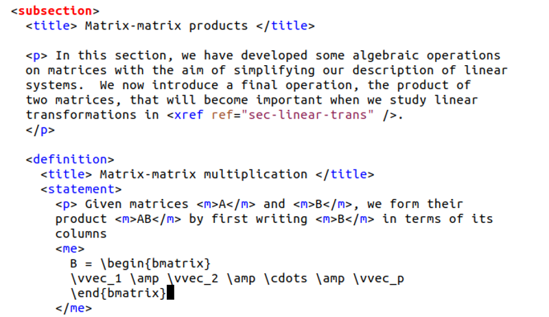
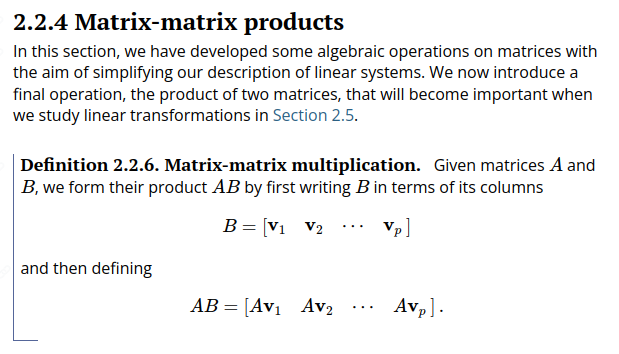

Mathematics online: PDFs and accessibility
David Austin (austind@gvsu.edu)
AMS Committee on Education Panel
Joint Math Meetings 2024
January 4, 2024
Who am I?
Professor of mathematics, Grand Valley State University
Director, Open Textbook Intiative, sponsored by the American Institute of Mathematics
Author, Understanding Linear Algebra, an open textbook written in PreTeXt.
Developer, software to facilitate accessible mathematical diagrams
PreTeXt -- pretextbook.org
An open-source authoring and publishing system for authors of textbooks, research articles, worksheets, and more
Write once: Documents are written as structured XML

PreTeXt -- pretextbook.org
Read anywhere: HTML, PDF, EPUB, braille, …
Accessibility is built in
Future proof
Vibrant community of users
Coming: accessible diagrams
